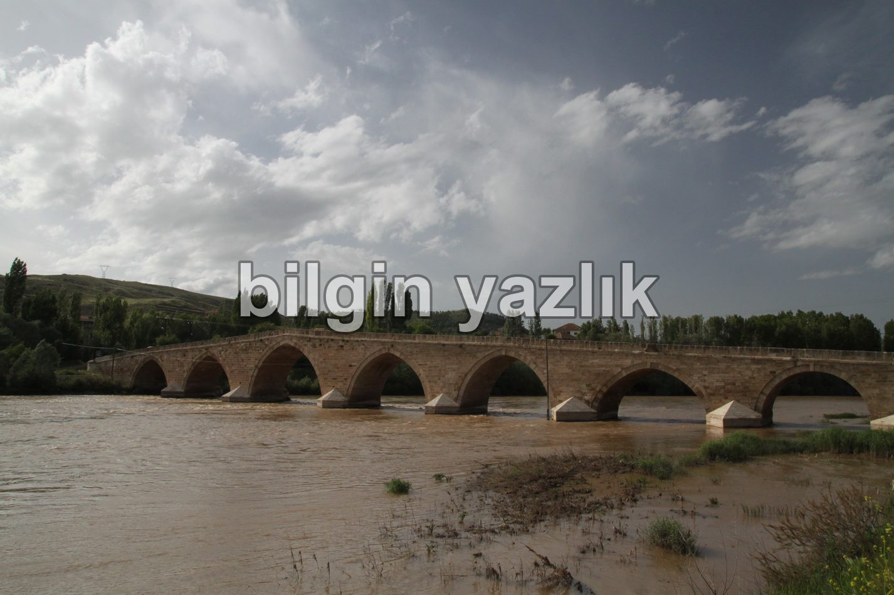
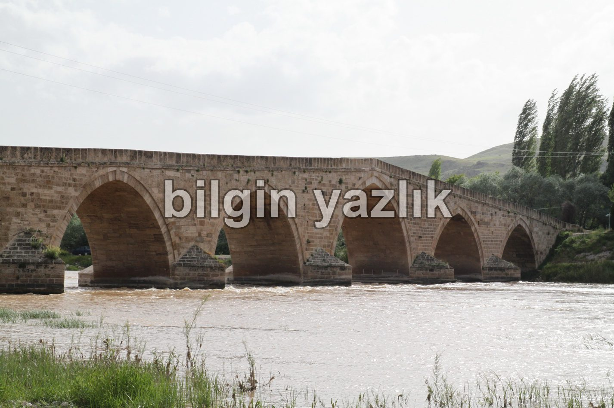

Tarihi Şahruh (Şahruk) Köprüsü
Köprünün yanı başında bulunan tabelada şunlar yazıyor:
“Tarihi Şahruk (Şahruk) Köprüsü: Dulkadiroğulları Beyliği zamanında Zülkadir soyundan Süleymanoğlu Ala’üddevle oğlu ŞAHRUH BEY tarafından H.897/M. 1492 yılında yaptırılmış olan köprü 144,56 mt uzunluğunda 5,6 mt genişliğinde olup 8 gözlüdür.
Şahruh beyin oğlu Mehmet Han tarafından H. 945 / M. 1538 / 39 onarımı yaptırılan köprü, daha sonraları 1908, 1935 ve 1957 yıllarında da onarım görmüştür. Karayolları 6. Bölge Müdürlüğü tarafından 1997 yılında başlatılan onarım ve çevre düzenlemesi çalışmaları 1999 yılında tamamlanarak hizmete açılmıştır.”
Köprünün tam konumu aşağıda yer almakta olup Kayseri – Sivas karayolundan Sarıoğlan istikametine gidilmek sureti ile Sarıoğlan’ı geçtikten sonra ulaşılabiliyor.
39 D 11′ 00” N
35 D 56′ 16” E


Bu yazı taliyol arşivinden taşınmıştır. · özgün kayıt